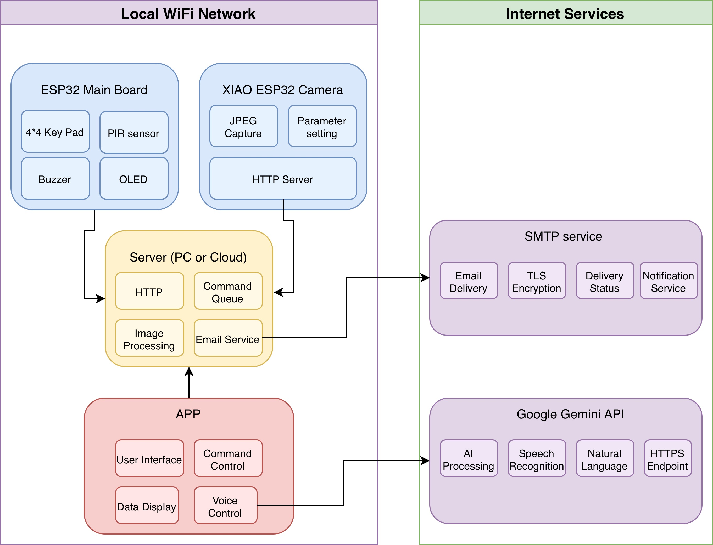
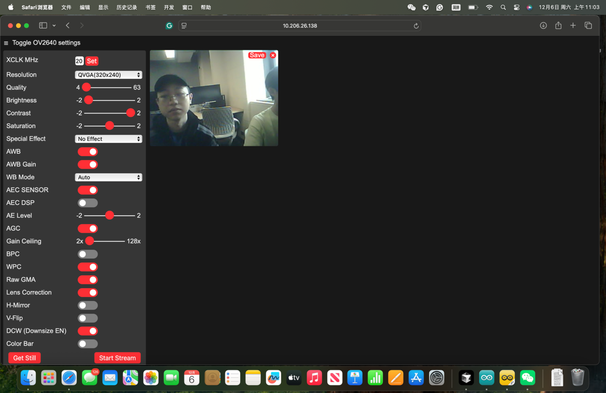
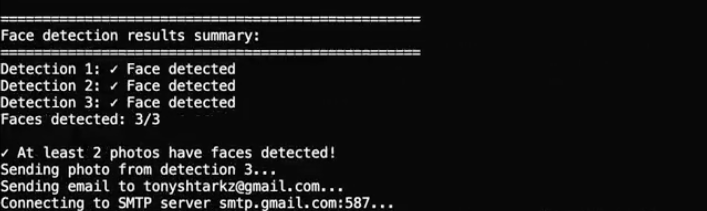
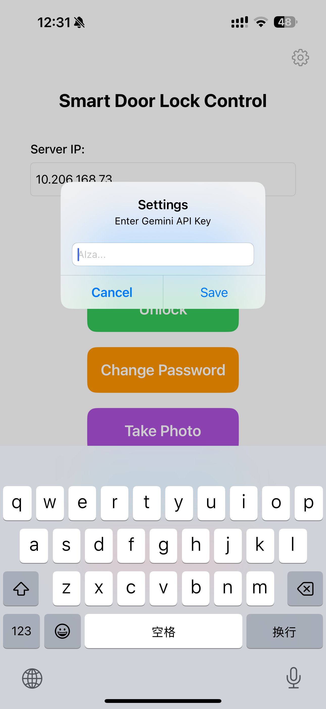
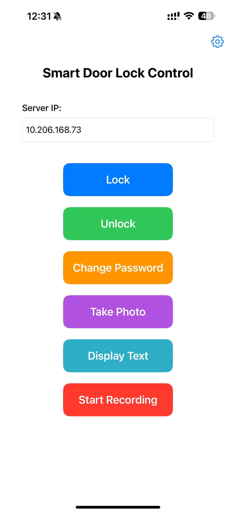
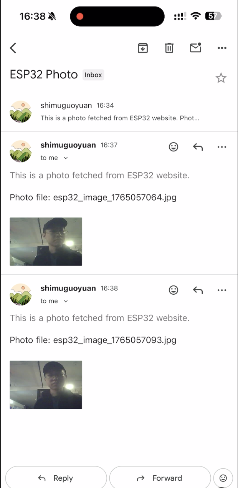

Smart Door Lock System
An intelligent IoT door lock system with face detection, voice control, and mobile app integration.
This project implements a smart door lock system that integrates ESP32 microcontrollers, a Python server with AI-powered face detection, and an iOS mobile application. The system provides multiple authentication methods including password-based access, temporary password generation, and voice-controlled commands. It features real-time face detection, automatic email notifications, and seamless integration between hardware sensors, server processing, and mobile control.
Motivation
In modern households and commercial environments, traditional door lock systems face multiple limitations, including weak security, lack of remote monitoring capability, and poor integration with smart devices. With the increasing demand for intelligent access control and the rapid adoption of IoT technologies, there is a need for a more secure, flexible, and user-friendly door lock system. Our motivation is to design an AI-enhanced smart door lock that combines face recognition, multi-factor improve home safety, streamline user experience, and demonstrate how embedded systems, AI, and mobile platforms can be integrated into a cohesive, modern access-control solution.
System
This section describes the system architecture, technical components, and prototype implementation.
1. Architecture

1.1 System Overall Structure
The system adopts a three-tier distributed architecture, with all components connected through a local WiFi network. The architecture consists of:
• ESP32 Main Board: Hardware control hub with sensors and I/O devices
• ESP32 Camera Module: Independent camera device serving images via HTTP
• PC Server: Central processing unit handling AI/ML tasks and coordination
• iOS Mobile App: User interface for remote control and monitoring
• WiFi Network: Communication backbone connecting all devices
1.2 Data Flow and Interaction Workflows
1. Email Notification Flow
ESP32 PIR detects motion → sends POST /trigger
↓
Server fetches 3 images from XIAO ESP32 Camera → OpenCV face detection
↓
At least 2 images have faces?
Yes
↓
Send email with image
No
↓
Stop, no email
2. Password Unlock Flow
User presses "A" → inputs password → presses "#"
↓
Temporary password?
Yes
↓
Verify with server
No
↓
Verify locally
↓
Verification success?
Yes
↓
Buzzer + OLED: Unlock
No
↓
Long beep + OLED: Lock
3. Mobile Control Flow
iOS user taps button → App sends POST /mobile_command
↓
Server queues command → ESP32 polls /get_mobile_command
↓
Command available?
Yes
↓
ESP32 executes command
No
↓
Wait and poll again
4. LLM Recording Flow
iOS user records audio → stops recording
↓
App sends audio to Gemini API → transcription + command parsing
↓
Command recognized?
Yes
↓
Send command to server
No
↓
Show error
1.3 System Module Division
The system is divided into four main modules, each handling specific data processing tasks:
Hardware Control Module (ESP32 Main Board)
• Processes PIR sensor signals (digital HIGH/LOW) → generates JSON trigger data
• Processes keypad input (character data) → password strings
• Processes password verification (string comparison, server verification) → boolean results
• Processes commands from server (JSON data) → executes and generates feedback (PWM signals, OLED text)
Image Acquisition Module (ESP32 Camera)
• Captures JPEG image data from camera sensor
• Serves image data via HTTP server (responds to GET requests with JPEG binary data)
Processing & Coordination Module (PC Server)
• Processes JSON requests (from ESP32 and iOS) → generates JSON responses
• Processes image data (JPEG → numpy arrays → OpenCV face detection) → face detection results
• Processes face detection results (3 images) → decision data (send email or not)
• Manages command queue data (FIFO list) → provides commands to ESP32
• Manages temporary password data (dictionary storage) → generates and verifies passwords
• Processes email data (image Base64 encoding, MIME format) → sends via SMTP
• Encodes image data as Base64 → returns in JSON for iOS app
User Interface Module (iOS App)
• Processes user input (button taps, text input) → command data
• Processes audio data (M4A recording → Base64 encoding) → sends to Gemini API
• Processes AI responses (transcribed text → command parsing) → command strings
• Processes network data (JSON requests/responses) → command execution
• Processes image data (Base64 decoding → UIImage) → displays in UI
• Manages configuration data (server IP, API keys) → stores in UserDefaults
2. Technical Components
2.1 Hardware Components
ESP32 Main Board
• ESP32 development board with MicroPython runtime
• PIR motion sensor: Detects human motion (5-7m range)
• 4x4 matrix keypad: Password input interface
• OLED display (128x32, I2C): Status and feedback display
• Buzzer (PWM): Audio feedback (2500Hz success, 1500Hz error)
ESP32 Camera Module
• ESP32-CAM with OV2640 camera sensor (2MP)
• HTTP server for image serving
• Generates an IP address
2.2 Software Components (Device Side - ESP32)
MicroPython Runtime
• Python 3.x syntax, Machine module for I/O, Network module for WiFi, Urequests for HTTP
PIR Detection
• State machine with edge detection, 3-second debounce, 5-second cooldown
• Sends JSON POST to /trigger endpoint
Keypad & Password System
• Row-by-row scanning algorithm, key mapping to characters
• Global password (default: "123") and temporary password verification via server
• Real-time OLED feedback, 10-second input timeout
Command Polling
• Polls /get_mobile_command every 1 second
• Executes commands (lock, unlock, change_password, display_text) with OLED and buzzer feedback
2.3 Software Components (Server / AI Side)
Flask Web Framework
• RESTful API on port 8080, multi-threaded, JSON format
• Endpoints: /trigger, /mobile_command, /get_mobile_command, /generate_temp_password, /verify_temp_password
OpenCV Face Detection
• Haar Cascade classifier (haarcascade_frontalface_default.xml)
• Pipeline: JPEG → numpy array → grayscale → face detection
• Parameters: scaleFactor=1.1, minNeighbors=5, minSize=(30,30)
• Workflow: 0.5s delay → 3 images (1/sec) → requires 2+ faces → send email
Email Service (SMTP)
• SMTP with TLS (smtp.gmail.com:587), MIME multipart with Base64 image attachment
Command Queue & Password System
• FIFO queue (Python list, max 10 commands)
• Temporary passwords: 6-digit random, dictionary storage, one-time use
Image Acquisition
• HTTP GET from XIAO ESP32 Camera, multiple path retry, Base64 encoding for iOS
API Endpoints:
| Endpoint | Method | Purpose |
|---|---|---|
| /trigger | POST | PIR trigger, start face detection |
| /lock | GET | Lock command |
| /unlock | GET | Unlock command |
| /change_password | GET | Change password command |
| /take_photo | GET | Legacy photo capture |
| /mobile_command | POST | Mobile app command interface |
| /get_mobile_command | GET | ESP32 command polling |
| /generate_temp_password | POST | Generate temporary password |
| /verify_temp_password | POST | Verify temporary password |
| /health | GET | Health check |
2.4 Software Components (Mobile App - iOS)
Development Framework
• Swift, UIKit, AVFoundation, URLSession, UserDefaults
User Interface
• Control buttons (Lock, Unlock, Change Password, Take Photo, Display Text)
• Audio recording (M4A, 44.1kHz) with AVAudioRecorder
• Server IP configuration and settings management
Network & AI Integration
• HTTP POST with JSON to /mobile_command endpoint
• Base64 image decoding and display
• Gemini API integration: Audio → transcription → command parsing
2.5 Communication Protocol Details
WiFi & HTTP
• IEEE 802.11 WiFi, infrastructure mode, local network
• HTTP/1.1, GET/POST methods, port 8080, JSON format
Data Formats
• JSON: Request/response data exchange (commands, status, image_base64)
• SMTP: Email transmission with Base64 image attachments
• I2C: OLED display communication (400kHz, device address 0x3C)
• PWM: Buzzer control (2500Hz success, 1500Hz error, 50% duty cycle)
• Base64: Image data encoding for JSON transmission
3. Prototype
3.1 Implemented Features
Core Functionality
• PIR motion detection with automatic face detection trigger
• Face detection using OpenCV Haar Cascade classifier
• Email notification when faces detected (at least 2 out of 3 images)
• Password-based unlock system (global and temporary passwords)
• Remote control via iOS app (lock, unlock, change password, display text)
• Photo capture from camera module via iOS app
• Real-time status display on OLED screen
• Audio feedback via buzzer for operations
• Temporary password generation and one-time verification
• Command queue system for reliable mobile command delivery
User Interface Features
• iOS app with intuitive button-based control interface
• Server IP configuration with persistence
• Photo display in app after capture
• Audio recording functionality
• Settings interface for API key configuration
Hardware Integration
• ESP32 main board with PIR sensor, keypad, OLED, and buzzer
• ESP32 camera module with HTTP image server
• WiFi connectivity for all devices
• I2C communication for OLED display
• PWM control for buzzer audio feedback
3.2 UI Screenshots and Hardware Photos
Note: Please add screenshots and photos here
• iOS App Main Interface: Control buttons, IP input, recording button
• iOS App Photo Display: Captured image viewer
• ESP32 Hardware Setup: Main board with connected sensors and displays
• ESP32 Camera Module: Camera module setup
• OLED Display: Various status screens (password input, unlock status, etc.)
Results

ESP32 Main Board

ESP32 Camera Module
Motion Detection & Face Recognition
The system successfully detects motion using the PIR sensor and performs face recognition on captured images. When motion is detected, the server automatically captures 3 images at 1-second intervals from the ESP32 camera module. Using OpenCV's Haar Cascade classifier, the system analyzes each image for faces. If at least 2 out of 3 images contain detected faces, an email notification is automatically sent to the configured recipient with the last valid face image attached.


Password Authentication
The password authentication system supports both global master password and temporary password verification. Users can enter passwords via the 4x4 keypad, with real-time visual feedback displayed on the OLED screen. The system provides clear audio and visual indicators for successful authentication (unlock) or failed attempts (lock). Temporary passwords are generated by the server as 6-digit codes and can only be used once, providing enhanced security for guest access.
Mobile Control & Voice Command Recognition
Mobile Control: The iOS mobile application provides seamless remote control of the door lock system. Users can send commands including lock, unlock, password change, photo capture, and custom text display. Commands are reliably delivered through a queue-based polling system, ensuring ESP32 receives and executes commands even with intermittent network connectivity. The system demonstrates low latency with commands typically executed within 1-2 seconds of being sent from the mobile app.
Voice Command Recognition: The voice command feature integrates Google Gemini API for speech-to-text transcription and natural language command parsing. Users can record voice commands through the iOS app, and the system accurately recognizes commands such as "lock", "unlock", "change password [number]", and "take photo". The system successfully parses natural language variations and executes the corresponding actions, demonstrating robust voice interaction capabilities.


Email Notification
The system automatically sends email notifications when face detection is successful. After the PIR sensor detects motion and the server confirms at least 2 out of 3 captured images contain faces, an email is sent to the configured recipient with the last valid face image attached. The email service uses SMTP with TLS encryption, ensuring secure delivery of notifications. This feature provides real-time alerts for security monitoring and access tracking.

References
- [1] Flask Development Team. Flask: A Python Microframework for Web Development. Retrieved from https://flask.palletsprojects.com
- [2] OpenCV Development Team. OpenCV: Open Source Computer Vision Library. Retrieved from https://opencv.org
- [3] Google AI. Gemini API: Generative AI Models. Retrieved from https://ai.google.dev
- [4] Apple Inc. iOS Developer Documentation: UIKit, AVFoundation, and URLSession. Retrieved from https://developer.apple.com/documentation
- [5] MicroPython Development Team. MicroPython: Python for Microcontrollers. Retrieved from https://micropython.org
Contact
Lizhong Wang, lw3225: lw3225@columbia.edu
Zhenghang Zhao, zz3410: zz3410@columbia.edu
Yankun Li, yl6022: yl6022@columbia.edu
Zhang Shurong, sz3397: sz3397@columbia.edu
Columbia University Department of Electrical Engineering
Instructor: Professsor Xiaofan (Fred) Jiang